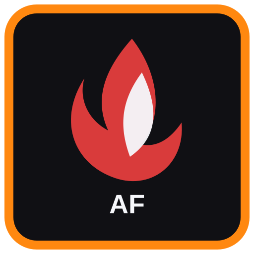
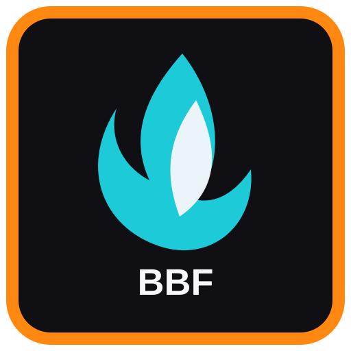

RNLA - Read Now, Later, Always
ExtensionReleased
A saved-content manager for read-now, read-later, and always-keep links.

Focused Firefox extensions and themes built to make everyday browsing easier, cleaner, and more flexible.
Reviving the best. Reforging the rest.
AshForge is a growing collection of Firefox tools that enhance existing browser features instead of trying to replace the browser. Install only the pieces you want, and let the Hub connect them when it makes sense.
A saved-content manager for read-now, read-later, and always-keep links.
A simple standalone link list, separate from browser bookmarks.
Build lightweight Firefox color/theme setups.
Fine-tune scrolling behavior and scrollbar themes.
Adds a second customizable home-page button to Firefox.

Dynamic bookmark toolbar sets for Firefox.
Save and restore custom zoom levels automatically.
A visual video bookmark library for saved video links.
Quickly try to open the mobile version of the current website.
A dark smoky glass Firefox theme with a soft frosted header effect.